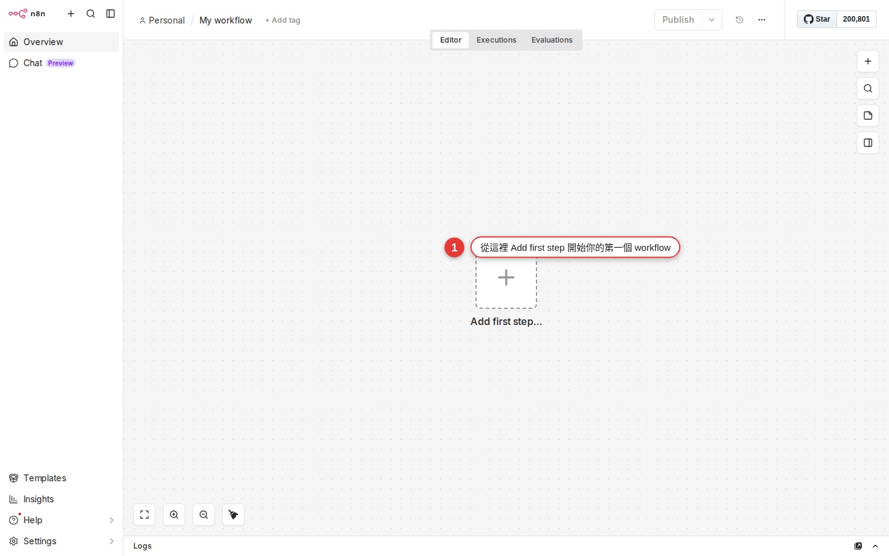

Your first workflow: push Google Calendar to Slack at 8:00 every morning
The first seven chapters were about concepts and about reading other people's workflows. This chapter is the first time you build something from a blank canvas that you will genuinely use every day: at 8:00 every morning, n8n reads your Google Calendar for today and sends the event titles and times to your Slack. By the end you do not just have a workflow that runs — more importantly, you will have caught the "Trigger → Action → Action" pattern, and every workflow after this one is that same skeleton with more parts added.
Why this is the right first workflow
You have probably already followed Chapter 6 and edited someone else's workflow, and maybe met the three node types in Chapter 7. But one question has been sitting there: "So when do I actually get to build one myself?" The answer is — now.
There are reasons for picking "push the calendar to Slack in the morning" as your first workflow:
- You will actually use it every day — this is not a toy example. It is the thing you glance at over your first coffee of the day. I have been running mine for over two years.
- Three nodes are enough — Schedule → Google Calendar → Slack. That happens to cover all three pieces of the pattern: trigger, fetch data, send it out.
- Both services are ones your company already uses — no odd third-party account to sign up for. Your existing Google Workspace and company Slack are all you need.
- Failure does no damage — this workflow only reads, it never writes. The worst case is that Slack gets no message; nothing can be deleted by accident.
If you have never set up a Slack or Google credential, this chapter walks you through it along the way. If you would rather deal with credentials in one go first, jump to Chapter 13, connect both accounts, and come back.
Three things to settle before you start
Before building any workflow, I answer three questions on paper (or in my head). This is the single most important habit in this book. Once you have it, anything you want to automate can be broken down into an n8n skeleton in 30 seconds:
| Problem | What that is in n8n | The answer this time |
|---|---|---|
| When should it run? | Which Trigger node to use | Same time every day → Schedule Trigger, set to 08:00 |
| What data does it need? | The SaaS node in the middle | Today's calendar → the Google Calendar node's Get Many (Resource=Event, Operation=Get Many) |
| What should it do? | The last action node | Send a message to myself → the Slack node's Send Message (Resource=Message, Operation=Send Message) |
Answer the three and you are done. You already know which three nodes to add and which operation each one needs. The rest of the work is just filling in the blanks.
Drawn as a flow, it looks like this
In the plainest possible form:
[⏰ Every day at 08:00] → [📅 Read today's calendar] → [💬 Send to Slack]
Schedule Google Calendar Slack
Trigger Event · Get Many Message · Send MessageThree nodes, two connections. That is all. Next you build it step by step.
From blank canvas to finished workflow — eleven steps
Before you start: make sure you are signed in to n8n.woowtech.io, that your Google account can see your own Calendar, and that Slack has a channel only you can see (or use your own DM) to test against.
-
Click Workflows in the sidebar, then Add workflow at the top right
After you sign in you land on the Workflows list by default. If you do not see the list, click Workflows in the left sidebar. At the top right of the list there is a + Add workflow button — click it. The screen switches to a blank canvas (gray grid background) with a large + Add first step button in the middle.

Figure 8-1 The blank canvas is where every workflow starts. Click Add first step in the middle to add your first Trigger node. -
Name the workflow:
Daily calendar digestAt the top of the screen there is a default name, My workflow. Click it to change it. Pick a name you can find again later, for example
Daily calendar digest. Next to it is Save (or Ctrl+S) — save once now, so a browser crash halfway through does not cost you everything.Tip: Try to name workflows as "verb + object + timing":Daily calendar digest,Hourly RSS fetch,Slack order to Notion. Once you have a lot of them, the name alone tells you what each one does. -
Click Add first step and pick Schedule Trigger
Click the + Add first step in the middle of the canvas. The nodes panel opens on the right, and the top few groups are the Trigger types. Find On a schedule (or just type
schedulein the search box) and click it. A node with a clock icon appears in the middle of the canvas — that is your Schedule Trigger. -
Set the schedule: Every Day, 08:00
Double-click the node you just added to open its parameters panel:
- Trigger Interval: pick
Daysfrom the dropdown (the dropdown really does say Days; there is no "Every Day" option, so do not go looking for one). - Days Between Triggers:
1(every day). - Trigger at Hour: pick
8amfrom the dropdown (this field is a dropdown, not a number box; the options read Midnight / 1am / 2am / ... / Noon / 1pm ..., so just choose 8am). - Trigger at Minute:
0(this one is the number box, 0–59).
When you are done, click ← Back to canvas at the top left of the panel (or press Esc). A schedule summary appears under the node, for example Every day at 8:00 am.
- Trigger Interval: pick
-
Click the + on the right of the Trigger node and find Google Calendar
Move the mouse to the right of the Schedule Trigger node and a small + appears. Click it, the nodes panel opens on the right again, and type
google calendarin the search box. Click the Google Calendar node that comes up.Once the panel opens, set Resource to
Eventand Operation toGet Many(the dropdown says exactly Get Many; "Events" is the resource name, and the n8n UI never spells it Get Many Events). Together they mean "fetch several calendar events". -
Connect a Google credential (the first time it opens the OAuth consent screen)
If the Credential to connect with field at the top of the panel is empty, open the dropdown → Create new credential. An OAuth window opens where you pick a Google account and allow n8n to read your Calendar. Once you allow it the window closes by itself and the credential is connected.
Warning: The OAuth consent screen shows a Google warning that this app has not been verified by Google. That is because Woow n8n is self-hosted rather than an official app, and it is normal. Click Advanced → Go to n8n.woowtech.io (unsafe) and continue. What you are authorizing is your own company's server, which is not the same thing as a public app. -
Pick your own calendar and set Time Min/Max to today's range
Back in the Google Calendar node panel, keep filling in:
- Calendar: pick your own from the dropdown (usually shown as your email address or Primary). This field is a resource locator: you can switch between From list (pick from the dropdown) and By ID (paste a calendar ID).
- Return All: ON (or turn it off and set a Limit instead, say 50).
- After: this field sits directly on the panel, not under Options. Switch it to Expression mode (there is a small fx icon to the right of the field) and enter
{{ $now.startOf('day') }}. (The field defaults to{{ $now }}and is calledtimeMininternally, but the label the UI shows really is After.) - Before: also right on the panel. Switch to Expression and enter
{{ $now.endOf('day') }}. (InternallytimeMax.)
The two expressions mean "from 00:00 this morning to 23:59:59.999 tonight". An expression is n8n's dynamic value syntax; Chapter 14 takes it apart in detail.
Warning: Plenty of older tutorials (including early versions of the official n8n docs) call these two fields Time Min / Time Max, which are the underlying Google Calendar API names. What the n8n UI shows today is After / Before. Not finding "Time Min" is normal — do not go digging under Options. -
Click Execute Node and check whether you actually have anything on today
At the top right of the Google Calendar node panel there is an Execute step button (some versions say Test step or Execute Node). Click it. This button runs only that one node; it does not run the whole workflow.
The OUTPUT panel on the right lists one n8n item per event (5 events today → 5 items). Each item has
summary(the title),start.dateTime(the start time),end.dateTime(the end time) and other fields at its top level — so inside the Slack node,$json.summarygives you the title of "the current item", not all of them. Seeing the list means the data came through.Concept: The key point here is that n8n expands every event into its own item rather than "packing them into oneitemsarray for the next node to map over". That difference matters, because the next step needs Slack to "join all the events into one message": you cannot write$json.items(there is no such field), you have to use$input.all(), or add an Aggregate node that folds N items into 1. Chapter 9 covers the item data flow in full. -
Add the Slack node: Send Message
The + to the right of the Google Calendar node → search
slack→ click Slack. Set Resource toMessageand Operation toSend Message(the dropdown says Send Message).The credential works the same way: the first time, click Create new credential and run through OAuth once to authorize your Slack workspace. When that is done, go back to the node panel and keep filling in.
Tip: Before wiring Slack straight on, it is well worth inserting an Aggregate node between Google Calendar and Slack (set Fields to Aggregate tosummary) to squash "N events" into "1 item holding an array". Slack then sends one message instead of one per event flooding your channel. Step 10 below assumes you added Aggregate; without it, Slack follows n8n's default "run once for each item" behavior and sends N messages. -
Pick your own channel, and build the Text with an expression
The Slack node's fields:
- Send Message To:
Channel(the dropdown also offers User — the FAQ comes back to that). - Channel: a resource locator. Switch to From list and pick from the dropdown, or By name and type
#daily-me, or By ID and pasteC0XXXXXXX. Test against a channel only you can see, or DM yourself (change Send Message To to User and pick yourself). Do not start with#general— your test messages would go to the whole company. - Message Text (some older versions say Text): switch to Expression mode (the small fx to the right of the field) and paste the block below (assuming you followed the tip in the previous step and added an Aggregate node with Fields to Aggregate set to
summary):
Good morning! You have {{ $json.summary.length }} events today: {{ $json.summary.join(', ') }}That reads as "after Aggregate,
summaryis already an array, so take its length and join it directly".The alternative without Aggregate (the Slack node looks at the whole batch of upstream items itself):
Good morning! You have {{ $input.all().length }} events today: {{ $input.all().map(i => i.json.summary).join(', ') }}The difference:
$json.xxxonly sees "the current item", while$input.all()gets you every upstream item. Never write$json.items.map(...)— the Google Calendar node's output has noitemsfield at all. That is the shape of the raw Google API response, and n8n has already flattened it.Click Execute step for a manual test, then switch to Slack — the message should be waiting there.
- Send Message To:
-
Save, then flip the Inactive toggle at the top right to Active
The workflow is finished. Click Save (or Ctrl+S). Then the most important step — flip the Inactive / Active switch at the top right of the screen to Active (right next to the Save button, at the right-hand end of the header bar that carries the workflow name). Leave that switch alone and the Schedule Trigger stays asleep: the time comes, nothing fires, and the only way to run it is to click Execute Workflow yourself.
Warning: The trap 90% of beginners fall into first is "I definitely set it to 8:00, so why did no message arrive the next day?" — nine times out of ten, Inactive was never flipped to Active. Saving and activating are two different things. The switch is at the top right next to Save; it is not hiding.
Congratulations. You have just built the first n8n workflow of your life that runs on its own. At 8:00 tomorrow morning it will read your calendar and send it to your Slack, with nothing more from you.
Slack message text, one level up: three common layouts
Step 10 above used the bare-minimum version. If you want the message to look better, Slack supports its own markdown flavor (called mrkdwn), and a little emoji makes that morning notification look like something rather than a log line. Three common layouts (all of them assume you added the Aggregate node earlier, with Fields to Aggregate set to summary, start; without it, change $json.summary to $input.all().map(i => i.json.summary)):
| Layout | What to put in Message Text | When to use it |
|---|---|---|
| Bare minimum | {{ $json.summary.length }} events today |
You only want the number, not the detail; good on heavy meeting days, so Slack does not get swamped |
| Bulleted | Today's schedule:\n{{ $json.summary.map((s, i) => '• ' + s + ' @ ' + $json.start[i].dateTime).join('\n') }} |
You want to see exactly when each one is; the everyday workhorse |
| Markdown | *Today's schedule* :calendar:\n> {{ $json.summary.map((s, i) => s + ' (' + $json.start[i].dateTime + ')').join('\n> ') }} |
Formal enough to quote and pass on; it looks more presentable when you share it with colleagues |
The syntax Slack supports, in short:
*bold*,_italic_,~strikethrough~`inline code`,```code block```> quote(put a>at the start of each line)- emoji use shortcodes such as
:calendar:,:coffee:,:tada:(Slack renders them as images automatically) - a line break is
\n(inside an expression that really is the two characters, backslash and n)
Manual test vs scheduled run — what the two buttons do
On the canvas you will see two buttons that look alike and mean completely different things:
| Button | Where | What it does | When to use it |
|---|---|---|---|
| Execute Node | Top right of a node's panel | Runs only that one node; nothing downstream is triggered | You have just configured a node and want to check the data is right |
| Execute Workflow | Bottom center of the canvas, or top right | Runs from the Trigger all the way to the end, but writes nothing to the execution log (some versions do write it, depending on the settings) | End-to-end testing while you build |
| Active toggle (ON) | Top right of the screen | Puts the Schedule Trigger into its live state: wait for the time, then run | You have finished building and want it live |
For a beginner, in one line: Execute Workflow is for you to watch, Active hands it over to the clock. Use the left one while you build; switch the right one on when you are done.
Reading executions — the page that solves most problems
Once the workflow starts running on its own, how do you know "did it run yesterday morning? did it succeed or fail? what did the data look like?" — the answer is the Executions page. It is the page you will come back to most often.
-
Two ways in
Path A: click Executions in the sidebar (you get the runs of every workflow on the account). Path B: open a workflow and switch to the Executions tab at the top (only this workflow's runs). The first time you go looking, Path B keeps other people's workflow records out of the way.
-
Read the list: green vs red
Every run has a status: green Success (everything went through), red Error (a node somewhere blew up), yellow Waiting (paused; it barely comes up in WoowTech's course material). The time column shows when it ran and how long it took.
-
Open one and see what each node produced
Click into a run and you get a view almost identical to the editing canvas, except that each node also shows "what this node took in and what it put out on this run". Click the Google Calendar node and you see the event JSON it fetched at 8:00 that morning.
-
The failing node lights up with a red border
When a run fails, the node that broke gets a red border; click it and the error message appears below. This is the fastest way to troubleshoot, ten times quicker than reading logs. If the error message means nothing to you, copy the whole thing into Google or ask IT; that usually finds the cause in a couple of moves.
Five ways to vary the workflow you just built
Once the skeleton makes sense, everything else is swapping parts. The same "push the calendar in the morning" logic turns into a completely different tool when you change one or two things. These five are variations I have actually used:
| What you want | What to change | How to change it |
|---|---|---|
| Workdays only, not every day | Schedule Trigger | Change Trigger Interval to Days of the week and tick Mon–Fri |
| Tomorrow's schedule pushed before you leave, too | Add a second Schedule | Duplicate the whole workflow, set the Schedule to 17:30, and change the Google Calendar Time Min/Max to {{ $now.plus({days:1}).startOf('day') }} through .endOf('day') |
| Push to the whole team, not just yourself | Slack Channel | Change Channel from #daily-me to #team-daily; reading from a shared team calendar makes the content more useful too |
| Push to LINE instead of Slack | Swap the node | Delete the Slack node and add a LINE Notify node (or call LINE's webhook with HTTP Request); see Chapter 11 |
| No push on days with nothing scheduled | Add an IF node in the middle | Wire an IF after Google Calendar with the condition {{ $json.items.length }} not equal to 0, and connect Slack to the True branch only. The IF core node gets a chapter of its own later |
Notice that none of these is "build another workflow" — they are all "same skeleton, different parts". That is what n8n is best at: every pattern you learn becomes a building block you can reuse.
The pattern this workflow teaches you
Strip out the detail and this chapter taught exactly one thing: Trigger → Action → Action. Every workflow you meet from here on, however complicated it looks, has the same bones:
[When it runs] → [What data to fetch] → [What to do]
Trigger Action 1 Action 2
(zero to many) (usually at least one)The later chapters only expand the middle:
- Data has to branch on a condition? Drop an IF in the middle (a core node)
- Several sources at once? Use Merge to bring them together
- Data needs cleaning up or adding up? Use a Set or Code node to work on it
- A different SaaS? Just swap out Google Calendar, swap out Slack; the pattern does not change
Which triggers there are and when to choose each — Chapter 10 works through all of them. Which SaaS integrations come up most and how to set each one up — Chapter 11. From this chapter, hold on to "Trigger → Action → Action": it is your first piece of the puzzle.
Common pitfalls
Almost everyone doing this for the first time hits one of the five below. Work through them one at a time:
-
The Calendar dropdown is empty after the Google Calendar node's OAuth
Usually the Calendar scope was not granted during authorization, or the wrong Google account was used. Fix: go back to the credential page, delete that credential, run Create new credential again, and when the OAuth window opens check carefully that you are picking the Google account that has the Calendar. The consent screen has to show the line about seeing the events on your calendars.
-
The Slack node turns red with 401 / not_authed / invalid_auth
The credential is not set up properly, or the token has expired. Go back to the credential page: (1) confirm the Slack workspace is the right one; (2) run OAuth again; (3) if your company Slack restricts installs (apps need admin approval), you may have to ask IT to approve the n8n app before you can connect.
-
The Schedule Trigger did not run the next morning
90% of the time the reason is the Active toggle at the top right was never switched to Active. Go and switch it. Other possibilities: (1) you forgot to save before leaving, so the schedule never took effect; (2) the timezone is wrong — you assumed 08:00 meant your local time, but a self-hosted n8n uses its configured instance timezone (the documented default is
America/New_York), so the offset depends on your location and daylight saving. Note: set Workflow settings → Timezone to your IANA timezone, for exampleEurope/London, or ask an administrator to set the instance’sGENERIC_TIMEZONE; (3) the Trigger node was deactivated (right-click a node to Deactivate; it turns gray and the whole workflow stops running). -
The Executions page has no records at all
A few possibilities: (1) the time has not come round yet, so the schedule has never been triggered; (2) the Trigger node is disabled (check whether it is gray); (3) you clicked Execute Workflow yourself but the workflow's "Save Data" setting is off (Workflow settings → Save execution progress, set it to On); (4) you are looking at the account-wide Executions, but your workflow is private and that run is buried a few pages down.
-
Slack got the message, but the body is the literal text
{{ $json.items.length }}The Message Text field was never switched to Expression mode. There is a small fx icon to the right of the field; only after switching does
{{...}}get evaluated, and without it the text is treated as plain text. Once you have switched,{{ $json.summary.length }}should preview as a number straight away. -
The message went out but the event title shows
undefinedThe Google Calendar API sometimes returns events with no
summaryfield (an empty all-day event, say, or certain calendar privacy settings). Fix: change the expression to{{ $input.all().map(i => i.json.summary || '(untitled event)').join(', ') }}, where||supplies a fallback string so you never get undefined. (With Aggregate in place, write{{ $json.summary.map(s => s || '(untitled event)').join(', ') }}.)
If it still will not work, copy the URL of that run from the Executions page and send it to a colleague or to IT — much quicker than describing a screenshot yourself. The fuller error-handling machinery (error workflow, retry) is opened up in Chapter 17.
FAQ
What happens if a run fails? Will I be notified?
By default a failed run leaves a red row on the Executions page, but nothing reaches out to you. If you do not look, you do not know. If this workflow matters (customer notifications, reconciliation), you can set up an Error Workflow — "when the parent workflow dies, another workflow runs automatically and sends you a Slack message". Chapter 17, "Error handling" covers the whole thing.
Is running once a day a waste of resources?
Once a day is extremely cheap. One run of this workflow takes under a second and moves a few KB, which is effectively no load at all. Even 24 runs a day (hourly) is still well inside the cheap range. The Woow n8n instance carries hundreds of workflows at this level without any trouble. What really eats resources is the "runs every minute + pulls tens of thousands of records + heavy computation in a Code node" kind, and you rarely need that.
Can I run many workflows like this at once? Will they interfere with each other?
You can have plenty of them, and they do not interfere with each other (every workflow runs independently). In practice many colleagues have 10–30 active workflows running under their account, and it all goes smoothly. Only two things need care: (1) credentials are shared (the same Google credential can be attached to several workflows), so deleting a credential or letting its token expire blows all of them up at once; (2) name them well, because that is what makes them findable once there are a lot.
Which timezone does $now.startOf('day') use for Time Min / Time Max?
It uses the timezone set on that workflow, and falls back to the n8n instance's timezone if none is set. A self-hosted n8n uses America/New_York as its documented default, so do not assume it matches your location. Note: set Workflow settings → Timezone to your IANA timezone, for example Europe/London (this workflow only), or ask an administrator to set the instance’s GENERIC_TIMEZONE. Confirm the effective zone on every newly created workflow. Chapter 14 fills in the timezone detail.
Can I push to a Slack direct message (DM) instead of a channel?
You can. On the Slack node set Send Message To to User (not Channel), then pick yourself or someone else's Slack name from the User dropdown. The message then shows up in the Slackbot DM or in the direct message with that person. For "a daily reminder only I see", a DM is usually tidier than creating a dedicated channel.
If I edit a workflow but forget to Save, does Active still run the old version?
Yes. Active runs "the last saved version"; unsaved edits do not take effect. So the order is: edit → Save → watch the next automatic run. Some versions show "Unsaved changes" above the canvas to remind you; if you see those words, you are editing a draft that has not been saved.
Can the Google Calendar node see a calendar a colleague shared with me?
It can, as long as that calendar is already shared with your Google account and you can see it in the Google Calendar web app; then it appears in the node's Calendar dropdown. Choose that calendar and you fetch its events. It works well for "a daily schedule push for the team".
What should I learn next?
The route I suggest: Chapter 9, "the item data flow" to get clear on how data actually passes between nodes (the concept people confuse most in n8n), then Chapter 10, "all the triggers" to meet the ways of starting a workflow other than Schedule (Webhook, SaaS triggers, Manual). After those two you will be able to design your second and third workflow yourself. If you would rather build straight from examples, Chapter 11 has a pile of real situations.